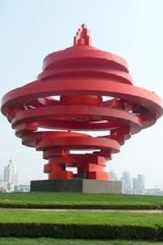
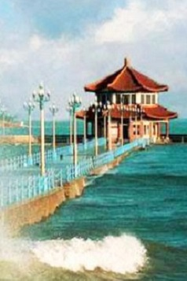
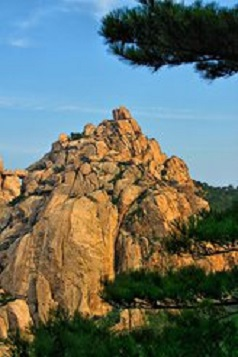
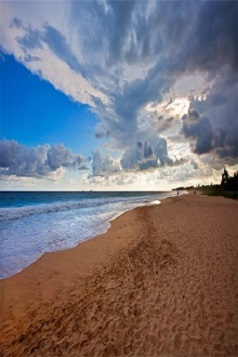

-
切换城市
青岛市被誉为“东方瑞士”，地处山东半岛东南部沿海。青岛是山东省省辖市，计划单列市、山东省经济中心城市、全国首批沿海开放城市、国家历史文化名城、全国文明城市、国家卫生城市、国家园林城市，国家森林城市，也是中国最具幸福感城市。
-
切换城市
南非，地处非洲大陆最南端，是整个非洲经济最发达，的国度。作为世界杯足球赛的举办地，南非的美丽风情越来越为世人所知，那里璀璨的钻石，以及开普敦、约翰内斯堡、布隆方丹这些美丽的城市无不令世人心醉神迷。去非洲最南端的彩虹之国，感受南非的美丽风情和多民族间有机融合的文化。
-
切换城市
曼谷是泰国首都和最大城市，为泰国政治、经济、贸易、交通、文化、科技、教育、宗教与各方面中心。曼谷是繁华的国际大都市，融合东西方文化、包罗万象的"天使之城"。是贵金属和宝石的交易中心。经济占泰国总量的四成。曼谷旅游业十分发达，被评选为全球最受欢迎旅游城市。
-
切换城市
巴厘岛，是世界著名旅游岛，是印度尼西亚的一级行政区之一。由于巴厘岛万种风情，景物甚为绮丽。因此，它还享有多种别称，如神明之岛、恶魔之岛、罗曼斯岛、绮丽之岛、天堂之岛、魔幻之岛、花之岛"等。被美国著名旅游杂志《旅游+休闲》一项调查结果把印尼巴厘岛评为世界上最佳的岛屿之一。
-
切换城市
东京，日本国首都，位于日本本州岛关东平原南端。东京是日本国的政治、经济、文化中心，海陆空交通枢纽，根据建成区面积、人口以及国民生产总值等指标，东京是亚洲第一大城市，世界第二大城市。全球最大的经济中心之一。
青岛天主教堂本名圣弥厄尔教堂，由德国设计师毕娄哈依据哥德式和罗马式建筑风格而设计。拟建教堂应高百米，适逢二战爆发，希特勒严禁德国本土资金外流，该教堂不得不修改图纸，即建成现在规模。教堂于1934年竣工,是建国前山东省最高的建筑。
青岛五四广场因青岛为中国近代史上伟大的五四运动导火索而得名，分布于中轴线上的市政府办公大楼、隐式喷泉、《五月的风》雕塑、海上百米喷泉等富有节奏地展现出庄重、坚实、蓬勃向上的壮丽景色，充满现代气息,已成为新世纪青岛的标志性景观之一。
青岛栈桥是青岛海滨风景区的景点之一，是国务院1982年首批公布的国家级风景名胜区，也是首批4A级国家旅游区。青岛栈桥由回澜阁、中山路、小青岛、海水浴场等景点组成。全球闻名的青岛啤酒标签上，印刻着与青岛同龄的栈桥的身影。
青岛市崂山区位于山东半岛南部，青岛市东南隅。该区是最适宜人类居住和投资创业的乐土，崂山素以人文景观和自然之美著称于世，有“海上名山第一”、“道教第二丛林”之美誉，也是龙山文化的重要发源地和中国民间艺术之乡。
青岛海滨浴场是指分布于山东省青岛市境内的海滨浴场，有多处，如青岛栈桥海水浴场、市南区南海路的第一海水浴场、黄岛区金沙滩海水浴场、黄岛区的银沙滩浴场、青岛石老人海水浴场等。